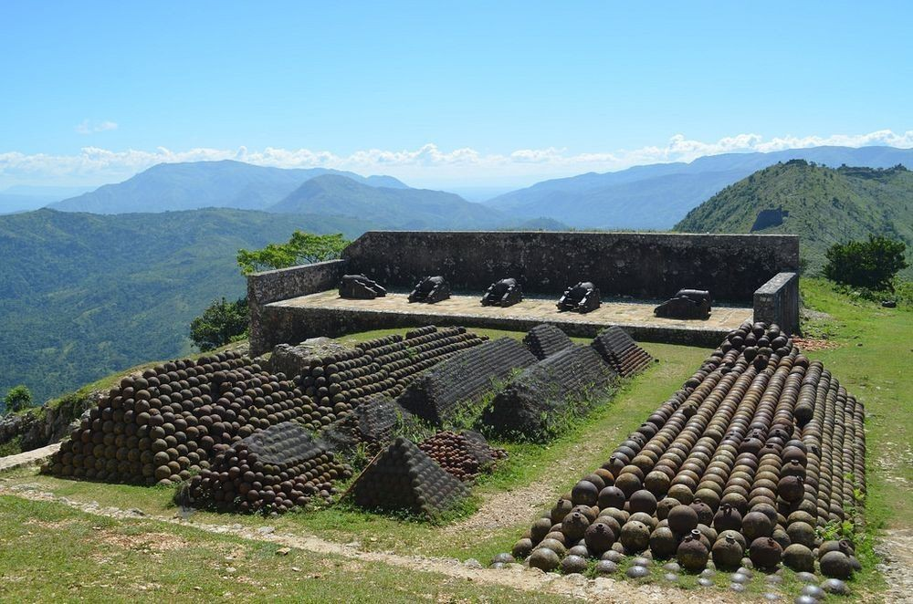
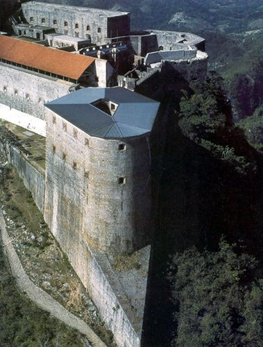
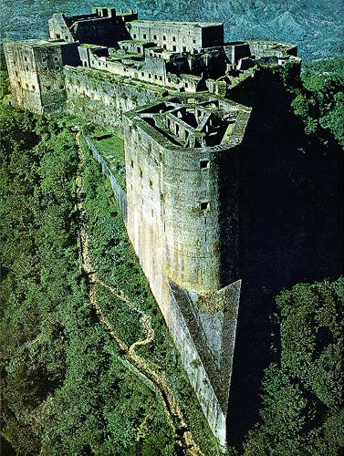
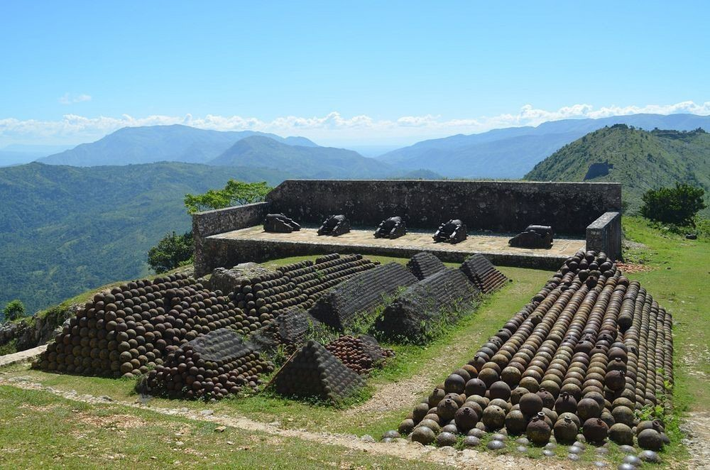
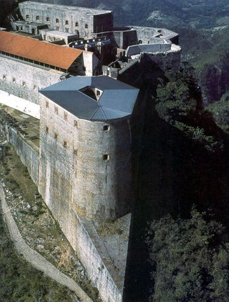
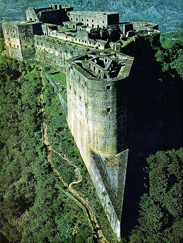

Cadras Beach
Autrefois connu sous le nom de Labadee.Cette plage merveilleuse eblouira les yeux de tous et son souvenir jamais ne s’efffacera. Comment visiter le cap sans se faire bronzer sur la plage de Cadras.Ne vous inquitez pas pour la nuit ,il y a des hotels a proximites pour vous servir valablement. Aujourd’hui, ce nom ne peut guère faire l’honneur du « peuple » ayitien. Labadie n’est pas le seul criminel dont un lieu porte le nom. C’est le cas de la ville de Desdunes (commune du département de l’Artibonite). De Vastey rapporte que Desdunes père a fait brûler vif, successivement, 45 noirs, hommes, femmes et enfants. À la suite du père, toute l’exécrable famille Desdunes a commis des cruautés de tous genres[3]. Delmas, Bellance : sont également des noms d’anciens colons criminels[4]. Delmas enchaînait ses esclaves dans un poteau, les enterrait vivants. Bellance enchaînait et enterrait vivant également. Il taillait à mort, mettait sur les plaies ensanglantées du citron, du piment, du sel, etc. La société ayitienne contemporaine, la masse en particulier, subit la violence symbolique exercée par ces noms de criminels. Rompre tous les liens avec la colonisation, comme le voulait Jean-Jacques Dessalines, est encore aujourd’hui une nécessité.
Paroisse Sainte Philomène

L’architecture d’une pure merveille pour les yeux,lieu paisible pour une bonne prière.La paroisse a été fondé en 1840, c’est un détachement de la paroisse St-Joachim.Sous le régimeanglais,en 1854 elle est devenu une municipalité dans les mêmes limites territoriales et avec un premier conseil sa construction est faite en pierre,sable,bois.La construction a commencé en 1844 et a pris fin en 1848. La paroisse Saint-Philomène, l’endroit idéal pour votre sante spirituelle. ette chapelle fut construite, en style néogothique, pour être le lieu de culte du couvent attenant, fondé en 1858 pour les « Dames de la retraite chrétienne », ou Sœurs Grises. Ce couvent devint en fin rapidement une école pour jeunes filles tenue par des religieuses. Ces dernières quittèrent le couvent en 1903, à cause des lois de persécution contre les congrégations. La Préfecture fit fermer au culte la chapelle Sainte-Philomène le jour de Pâques 1904. L’ensemble des bâtiments fut vendu en 1908 à un promoteur toulonnais. La chapelle servit alors de dépôt de poudre et de munitions, puis, après la Première Guerre mondiale, de local à la fanfare du quartier !voir les images
Citadelle Laferrière
 





Citadelle Laferrière,premier grand edifice du Nord construit par le roi Henry 1er avec la sueur et le sang des capois.Cet imposant edifice represente la rigueur,la perferction et le debut d'une toute nouvelle ere pour le nord.la Citadelle est plein de fascinant mystere,il suffit d'une visite et vous serez eblouis.La forteresse est construite après l'indépendance en 1804 pour défendre la partie nord de l'île d'Haïti contre un éventuel retour des Français. 20 000 personnes participent aux travaux de construction qui durent quatorze années. Il est à noter que 2000 de ces travailleurs périssent au cours de la construction. Ce « sang mélangé au mortier de l'édifice » est la cause de la solidité de la Citadelle, selon les guides touristiques haïtiens. Les bâtiments ont été en partie détruits par le tremblement de terre de 1842. Des travaux de reconstruction, menés par l'Institut de sauvegarde du patrimoine national (ISPAN) ont permis de sauvegarder ce patrimoine. Une plaque a été déposée vers 1990 pour rappeler aux Haïtiens visitant ce lieu que le roi Henri Ier, qui s'était suicidé le 8 novembre 1820 au palais de Sans-Souci, a été enterré en sa Citadelle. Ce lieu a une valeur patriotique importante aux yeux des Haïtiens voir les images